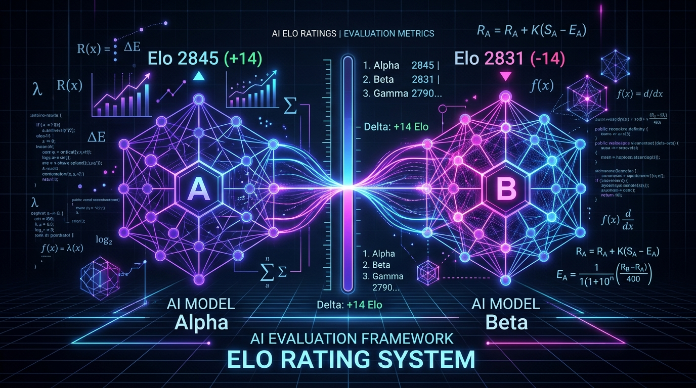

How do we know if GPT-4o is truly better than Claude 3.5 Sonnet? Or if Gemini 1.5 Pro outperforms Llama 3? In the early days of deep learning, evaluating models was straightforward. We used static benchmarks like MMLU (multi-task language understanding), GSM8K (grade-school math), or HumanEval (coding).
But as LLMs have transitioned into highly conversational, open-ended assistants, static benchmarks are failing. Models saturate them quickly, and they are notoriously vulnerable to test-set contamination—where benchmark questions leak into the models' training data.
To solve this, the AI community looked back at a 60-year-old chess ranking algorithm: the Elo Rating System. Today, systems like LMSYS Chatbot Arena rely on Elo to crowdsource human preferences, creating a dynamic, contamination-resistant, and highly aligned standard for model evaluation.
The Origin of Elo
Before the 1960s, chess players were ranked using numerical systems that did not reflect the relative strength of opponents. A master beating a novice earned the same points as beating another master. In 1960, Arpad Elo, a Hungarian-American physics professor and chess master, introduced a statistical, self-correcting system.
Rather than looking at absolute scores, Elo framed chess games as probabilistic events. The rating difference between two players predicts the likelihood of who will win.
The Mathematics of Elo
Suppose we have two players (or AI models), $A$ and $B$, with current Elo ratings $R_A$ and $R_B$.
1. The Logistic Expected Score
The expected score represents the probability that Player $A$ will win against Player $B$. Using a logistic curve, this is defined as:
Similarly, the expected score for $B$ is:
The scale factor of $400$ is a historical convention from chess. If $R_A - R_B = 400$, then $E_A = 1 / (1 + 10^{-1}) \approx 0.91$. This means a player rated 400 points higher than their opponent has roughly a $91\%$ chance of winning. If their ratings are identical ($R_A = R_B$), then $E_A = 0.5$, indicating a balanced matchup.
2. The Self-Correcting Rating Update
After a match is played, the actual outcome $S_A$ is recorded:
- $S_A = 1$ if Player $A$ wins.
- $S_A = 0.5$ in the case of a draw.
- $S_A = 0$ if Player $B$ wins.
We then update Player $A$'s rating using the formula:
Here, $K$ represents the K-factor (the learning rate or sensitivity constant). Let's look at how the prediction error $(S_A - E_A)$ drives the update:
- Expected Outcome: If a highly-rated model ($E_A = 0.90$) wins against a weak model ($S_A = 1$), the update is minor: $+K(0.10)$.
- The Upset: If the highly-rated model loses ($S_A = 0$), the rating drops significantly: $-K(0.90)$. Meanwhile, the weaker model gains a massive boost.
Why Elo is King in LLM Evaluation
Static benchmarks struggle with nuance, but Elo-based human-in-the-loop arenas (like LMSYS) offer several unique advantages:
| Feature | Static Benchmarks (e.g., MMLU) | Elo-based Arenas (e.g., LMSYS) |
|---|---|---|
| Evaluation Method | Multiple-choice / Exact string matching | Pairwise comparison by humans or LLM-judges |
| Contamination Risk | High (questions leak into training text) | Extremely low (queries are user-generated & live) |
| Saturability | High (models hit 95%+ accuracy) | Open-ended (ratings scale dynamically with skill) |
| Alignment | Correlates poorly with real-world utility | Directly measures human preferences and helpfulness |
| Inter-Annotator Scale | N/A | Highly consistent (eliminates scale drift) |
Beyond Online Updates: The Bradley-Terry Model
In professional applications like LMSYS Chatbot Arena, updating ratings one-by-one (online Elo updates) is problematic because the final ratings depend on the chronological order of the matches, and online updates have high variance.
Instead, we model the system using the Bradley-Terry (BT) model. The BT model assumes each model $i$ has a latent quality score (log-ability) $r_i$. The probability that model $i$ beats model $j$ is given by:
This is mathematically identical to a Logistic Regression model without an intercept! By framing model comparisons as a classification problem, we can feed all historic match results into a logistic regression solver. The learned weights $w_i$ represent the log-abilities $r_i$, which we scale to classic Elo ratings using:
Hands-on Implementation in Python
The following Python code demonstrates both: the classic, game-by-game Elo update method, and the batch Bradley-Terry Maximum Likelihood Estimation (MLE) using logistic regression.
import numpy as np
from sklearn.linear_model import LogisticRegression
# --- METHOD 1: Classic Online Elo Update ---
def update_elo(rating_a, rating_b, score_a, k=32):
# Expected probability of A winning
expected_a = 1 / (1 + 10 ** ((rating_b - rating_a) / 400))
expected_b = 1 - expected_a
score_b = 1 - score_a
# Calculate new ratings
new_a = rating_a + k * (score_a - expected_a)
new_b = rating_b + k * (score_b - expected_b)
return new_a, new_b
# --- METHOD 2: Bradley-Terry MLE via Logistic Regression ---
def fit_bradley_terry(models, matchups):
"""
models: list of model names
matchups: list of tuples (model_a, model_b, winner)
winner: 1 if model_a won, 0 if model_b won
"""
model_idx = {model: i for i, model in enumerate(models)}
num_models = len(models)
X = []
y = []
for model_a, model_b, winner in matchups:
# Feature vector: +1 for model_a, -1 for model_b
x = np.zeros(num_models)
x[model_idx[model_a]] = 1
x[model_idx[model_b]] = -1
X.append(x)
y.append(winner)
X = np.array(X)
y = np.array(y)
# Fit logistic regression without intercept
lr = LogisticRegression(fit_intercept=False, C=1e5) # High C -> no regularization
lr.fit(X, y)
# Extract weights (log-abilities)
weights = lr.coef_[0]
# Anchor rating of the first model to 1000 Elo for scaling
scale = 400 / np.log(10)
elo_ratings = weights * scale
# Normalize so the mean rating is 1200
elo_ratings = elo_ratings - np.mean(elo_ratings) + 1200
return {model: round(elo_ratings[i], 1) for model, i in model_idx.items()}
# --- Execution Example ---
if __name__ == "__main__":
# 1. Classic Elo test
r_a, r_b = 1200, 1000
print(f"Before: Model A ({r_a}) vs Model B ({r_b})")
new_a, new_b = update_elo(r_a, r_b, score_a=0) # Model B upsets Model A!
print(f"After Upset: Model A ({new_a:.1f}) vs Model B ({new_b:.1f})\n")
# 2. Batch Bradley-Terry MLE
model_list = ["Model-Alpha", "Model-Beta", "Model-Gamma"]
match_history = [
("Model-Alpha", "Model-Beta", 1), # Alpha beats Beta
("Model-Alpha", "Model-Beta", 1), # Alpha beats Beta
("Model-Beta", "Model-Gamma", 1), # Beta beats Gamma
("Model-Gamma", "Model-Alpha", 0), # Alpha beats Gamma
("Model-Beta", "Model-Gamma", 0) # Gamma beats Beta
]
ratings = fit_bradley_terry(model_list, match_history)
print("Bradley-Terry MLE Ratings:")
for m, r in ratings.items():
print(f" - {m}: {r} Elo")The Blind Spots of Elo in AI
While Elo is incredibly powerful, it isn't perfect for AI evaluation. The main challenges include:
- Verbosity Bias: Human annotators often prefer longer, structured answers even if they contain subtle factual errors or hallucinations.
- Style & Formatting Bias: Models with clean markdown, bullet points, and polite phrasing generally score higher, biasing the metric toward presentation rather than deep reasoning.
- Intransitivity (Rock-Paper-Scissors): Elo relies on the mathematical assumption of transitivity ($A \succ B$ and $B \succ C \implies A \succ C$). However, in AI, Model A might excel at coding but fail at creative writing, leading to cyclic preference loops.
- Position Bias: In pairwise comparisons, humans are slightly more likely to select the model presented first (A) rather than second (B). Modern platforms mitigate this by randomizing the presentation order.
Final Thoughts
The Elo rating system has evolved from a chess scoring tool into a cornerstone of AI evaluation. By treating evaluation as a dynamic competition rather than a static exam, Elo helps us measure LLMs in a way that matches actual human utility. While biases exist, mitigation techniques like Bradley-Terry batch regression and randomized ordering ensure that Elo remains one of the most reliable and trusted standards in the machine learning ecosystem.